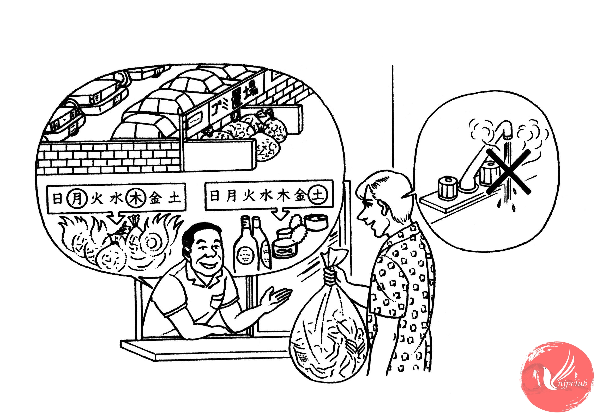

| 管理人： |
ミラーさん、引っ越しの 荷物は 片付きましたか。 |
| ミラー： |
はい、だいたい 片付きました。 |
|
あのう、ごみを 捨てたいんですが、どこに出したら いいですか。 |
|
| 管理人： |
燃える ごみは 月曜日と 木曜日の 朝 出して ください。 |
|
ごみ置き場は 駐車場の 横です。 |
|
| ミラー： |
瓶や 缶は いつですか。 |
| 管理人： |
土曜日です。 |
| ミラー： |
わかりました。それから、お湯が 出ないんですが・・・。 |
| 管理人： |
ガス会社に 連絡したら、すぐ 来て くれますよ。 |
| ミラー： |
すみませんが、電話番号を 教えて いただけませんか。 |
| 管理人： |
ええ、いいですよ。 |